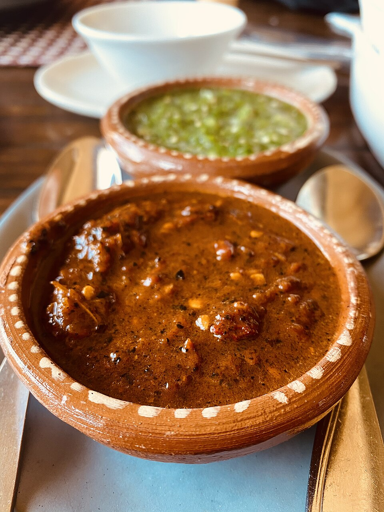

🏠 Home
Salsa
Omelet
Chips
Salsa Recipe

Description
Spicy ass salsa roja al molcajete. Makes 3 cups.
Ingredients
About 6 plum tomatoes
About 8-10 serrano chiles
about 5 dried and/or fresh chile de arbol
About 4 large cloves of garlic
a quarter of a large yellow onion
handful of cilantro (grab handfuls of other stuff to add love to the recipe)
salt to taste
limón (optional)
Steps
throw all the things on a hot ass comal and toast until your eyes water in pain
NOT the cilantro or salt, menso
toast the things until the tomatoes are juicy and chiles are black like your soul
throw ALL the things in the molcajete and grind it like its the backseat of your '94 Corolla
salt is cheap and I know you like to throw it at people, season that shit
for a bit of sour and bitter because I know you are, squeeze that limón like your ex used to do
feed the spicy chile to people you love or hate